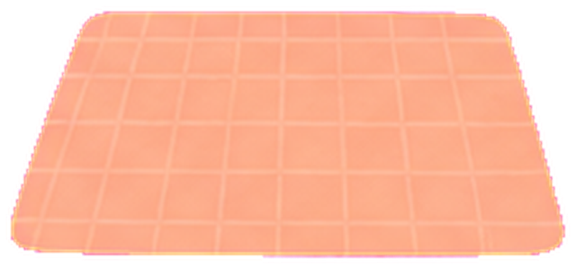
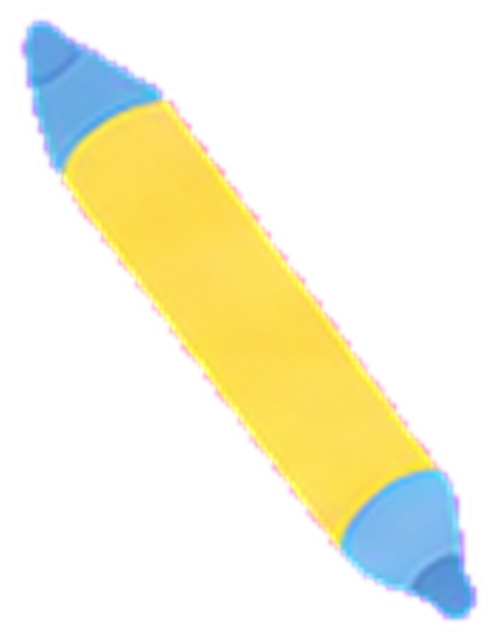

養成講座ガイド
キャリアコンサルタントは独学で取れる？ — 受験資格の条件
「養成講習は高いし、独学で受けられないかな」と考える方は多いと思います。先に結論を言うと、独学だけでは受験できません。その理由と、受験が認められている3つのルートをまとめました。
更新日: 2026年10月15日情報確認日: 2026年9月24日
ANSWER
結論：キャリアコンサルタントは、独学で取れる？
受験する人の約9割は、養成講習を修了した人です(第31回試験)。
PRこのページには広告(紹介リンク)がありますくわしく
- 広告・PR
- 右下の「無料説明会を見る」のボタンは、広告(紹介リンク)です。本文には紹介リンクを入れていません
- 紹介報酬
- 右下のボタンから説明会参加・申込みがあった場合、運営者が報酬を受け取ることがあります
- 学校からの無償提供
- 受けていません
- 情報の根拠
- キャリアコンサルティング協議会・厚生労働省の公開情報
結論:キャリアコンサルタントは独学だけでは受験できません
国家資格キャリアコンサルタント試験には受験資格があり、誰でも申し込めるわけではありません。
「テキストを買って勉強して、そのまま受ける」という意味の独学だと、受験資格がない限り、申し込みの時点で止まってしまいます。誰でも受けられる宅建やFPとは、ここが大きく違います。

モヤン本、買ってきた！ これで11月の試験、受けられるよね？

サニー先生その本は、えらい！ でも、申し込み画面で「受験資格は？」と聞かれるんだ。キャリアコンサルタント試験は、だれでも受けられる試験じゃないんだよ。
モヤン本は、受験資格を取ってからの出番……！
受験資格として認められる3つのルート
試験実施機関が公表している受験資格は、次の3つです。
1. 養成講習を修了する厚生労働大臣が認定した講習を修了します。いちばん一般的なルートです。
2. 実務経験3年以上働く人の仕事選び・キャリアの計画・スキルアップについての相談を、仕事として3年以上していること
3. 技能検定の合格技能検定(キャリアコンサルティング職種)の学科試験か実技試験に合格していること
出典: キャリアコンサルティング協議会「受験概要」(確認日: 2026年9月24日)
3つ目の技能検定ルートは、キャリアの仕事にすでに長く関わっている方向けです。多くの方にとっては、1か2のどちらかが現実的です。

「実務経験3年」は、思ったより条件が細かい
「人事の仕事をしていたから、実務経験になるのでは？」と思う方もいるかもしれません。ただ、認められる相談には条件があり、公式には次のように書かれています。
- 支援の対象が労働者であること(学校卒業後の就職希望者を含む)
- 相談内容が職業の選択・職業生活設計・職業能力開発に関するものであること
- 一対一で行われる相談であること(少人数のグループワークを含む)
出典: キャリアコンサルティング協議会「受験概要」(確認日: 2026年9月24日)
たとえば、採用面接や人事評価の面談、研修の講師などは、この条件に当てはまらないことがあります。自分の経験が当てはまるか迷ったら、申し込む前に試験を行う団体へ問い合わせるのが確実です。
サニー先生見るところは3つ。相手が「働く人」で、話の中身が「仕事選び・キャリアの計画・スキルアップ」で、「一対一」の相談であること。採用面接や人事評価の面談は、当てはまらないことがあるんだ。
モヤン迷ったら、申し込む前に試験の団体に聞いてみる！

キャリアコンサルタント試験の勉強は、独学でもできます
誤解されやすいのですが、独学でどうにもならないのは受験資格を得るところだけです。受験資格さえあれば、試験勉強そのものは独学でも進められます。
養成講習には試験対策が含まれない講座も多く、その場合は別料金の対策講座を取るか、自分で勉強するかを選ぶことになります。このサイトのことば図鑑や理論家図鑑も、その独学のために作っています。
つまり現実的なのは、受験資格は養成講習で満たし、試験勉強は必要に応じて独学で補うという進め方です。
サニー先生独学は、受験資格のかぎは開けられない。でも、試験勉強のドアなら、いくらでも開けられるよ。
モヤンかぎは養成講習、ドアの向こうは独学……！ わかった！
養成講習を受けずに受ける人は、どれくらいいる？
厚生労働省が公表している、第31回試験(2026年3月)の結果を見てみます。
学科試験を受けた人4,983人。うち養成講習を修了した人が4,399人(約88%)、実務経験3年以上の人が581人(約12%)実技試験の合格率養成講習を修了した人は約66%(4,904人中3,222人)、実務経験3年以上の人は約57%(639人中363人)学科試験の合格率養成講習を修了した人は約80%(4,399人中3,536人)、実務経験3年以上の人は約82%(581人中479人)
出典: 厚生労働省「第31回キャリアコンサルタント試験結果の概要」(確認日: 2026年10月4日)。割合は、この資料の人数から当サイトで計算しました。
受験する人のおよそ9割は、養成講習を修了した人です。学科試験の合格率はほとんど変わりませんが、実技試験(論述と面接)では、養成講習を修了した人のほうが高くなっています。
実技は、ひとりで本を読むだけでは練習しにくい試験です。次に、わたしが養成講習を修了したあと、実際にどう勉強しているかを書きます。
モヤン学科の合格率はほとんど同じなのに、実技は差があるんだね。
サニー先生実技は論述と面接。本を読むだけだと、練習相手がいないからね。次に、ちゃんたちがどう練習しているかを見てみよう。
わたしが修了後にやっている試験勉強(合格前の記録)
わたしは養成講習を修了して、2026年11月の試験に向けて勉強しているところです。まだ合格していないので、「合格した勉強法」ではありません。いまやっていることを、そのまま書きます。試験は、キャリアコンサルティング協議会で受けます。
学科は、過去問を解いて、わからないところを埋める
学科は、過去問を解いています。過去問を解いて、わからないところのジャンルを把握して、埋めている感じです。
やり方は、過去問を解く → 用語がわからない → このサイトで調べる → 用語の意味や背景も一緒に学ぶ → 定着する、という流れです。このサイトで本当に勉強になるのか、自分で実験しているところでもあります。
論述は、チームで過去問を解いて、見せ合う
論述と面接は、養成学校のチームで一緒に取り組んでいます。
論述は、過去問3回分を解いて、LINEで共有し、AIで採点しています。点数が高い人の答案のどこが良かったのか、どんなテンプレートで書けばいいのかを分析して、その3回分を試験まで繰り返し解きます。
面接は、週に1回、Zoomで練習する
面接は週に1回、Zoomで面談と口頭試問の練習をしています。2名いれば始められます。人数が多いときは3人1チームになって、キャリアコンサルタント役(CC)・相談者役(CL)・オブザーバーを交代で担当します。
時間は、面談が15分、口頭試問が5分ほど、そのあとに振り返りです。Zoomの40分で、ちょうど1回分になります。
修了後に、お金はかけていません
学校の卒業後サポート(キャリア・オアシス)は、費用が高いと感じたので使いませんでした。マンツーマンで勉強したい人や、養成学校で横のつながりができなかった人は、利用するといいのかなと思います。
Zoomの練習にタイミングが合わない人は、キャリコンスタディの無料ロープレ練習ルームに参加していました。わたしは参加していないので、開催日や参加の条件は公式ページで確認してください。
養成講習だけでは足りなかったもの
養成講習だけで足りないと感じたのは、面談とロープレの練習相手、伴走してくれる相手です。しっかり横のつながりを作ることが大切だと思います。
自分が資格を取れたら、初学者が気兼ねなく練習できるコミュニティを作れたらいいな、と考えています。
モヤン面接の練習って、ひとりだとできないもんね……。
サニー先生2人いれば始められて、Zoomの40分でちょうど1回分。ちゃんたちのやり方は、そのまままねできるよ。

ちゃん体験養成講習だけで足りないと感じたのは、練習相手と、伴走してくれる相手でした。横のつながりは、本当に大事です。
キャリアコンサルタント資格の取得にかかる費用の全体像
つい養成講習の受講料だけで考えがちですが、キャリアコンサルタントと名乗れるようになるまでには、ほかにも費用がかかります。
養成講習おおむね30万円前後(講座により異なる。学校比較で確認できます)
受験手数料(学科)8,900円
受験手数料(実技)29,900円
登録免許税9,000円(収入印紙)
登録手数料8,000円(非課税)
更新(5年ごと)更新手数料8,000円+更新講習(知識8時間以上・技能30時間以上。受講料は機関により異なる)
出典: キャリアコンサルティング協議会「受験概要」 / 国家資格キャリアコンサルタント登録センター(確認日: 2026年9月24日)
試験に合格しただけでは名乗れず、登録してはじめてキャリアコンサルタントを名乗れます。5年ごとの更新もあるので、資格を取ったあとも費用がかかることは覚えておいてください。
養成講習の費用は給付金で実質いくらになるかも合わせて確認すると、実際の負担額が見えてきます。
サニー先生試験に合格しただけでは、まだ名乗れない。登録して、はじめて「キャリアコンサルタント」。そのあとも5年ごとに更新があるよ。
モヤン合格して、登録して、更新して……。ゴールのあとにも道が続いてるんだね。
よくある質問
Q独学だけで受験できますか？
Aできません。受験資格が必要で、養成講習の修了、実務経験3年以上、技能検定の合格のどれかを満たす必要があります。
Q人事の仕事の経験は、実務経験になりますか？
A相手が労働者で、相談の中身が職業の選択・職業生活設計・職業能力開発に関するもので、一対一で行う相談であることが条件です。採用面接や人事評価の面談は、当てはまらないことがあります。
Q試験の勉強は、独学でもできますか？
Aできます。受験資格さえあれば、試験勉強そのものは独学でも進められます。
Q養成講習を受けずに受験する人は、どのくらいいますか？
A第31回試験の学科試験では、受けた4,983人のうち約12%(581人)が実務経験3年以上の人でした。約88%は養成講習を修了した人です。
Q資格を取るまでに、講習のほかにどんな費用がかかりますか？
A受験手数料(学科8,900円・実技29,900円)、登録免許税9,000円、登録手数料8,000円がかかります。5年ごとに、更新手数料と更新講習の費用もかかります。